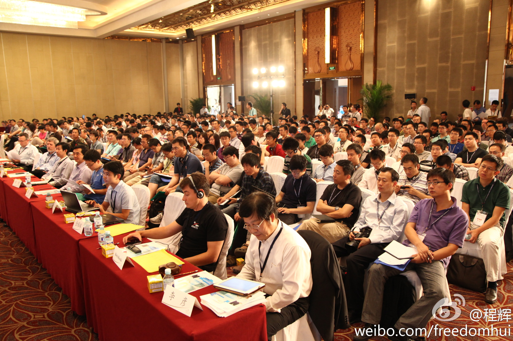

无功受禄很惭愧的，我没做啥。辛苦的是一大堆@CSDN 的幕后同事和openstack社区的那帮人士。//@滕召智:挺好！可惜今天没有去成，期待更多的云能汇聚成朵，提供切实落地的服务，不断完善云服务中的各个衔接工具。对开发者，对使用者不同层级的透明起来。@ben_杜玉杰 @ubuntu_motu @Ada李力 各位幸苦！
@程辉:
OpenStack大会终于完美落幕了，刚休息了一会，看到这张照片还是非常感慨的，这是第一天北京场的全景图，一千个多个座位都坐满了，这一屋子基本上集中了中国做OpenStack的公司，开发者和技术爱好者，基本可以判定，OpenStack未来两三年，必将成为虚拟化平台、云平台的主流，VMware市场也会逐步萎缩。
- 